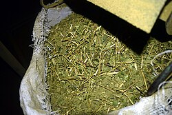

La yerba mate, yerba de los jesuitas o yerba del Paraguay (Ilex paraguariensis) (en guaraní: ka'a), es una especie arbórea neotropical originaria de América del Sur. Se encuentra presente en la región de la Mata Atlántica de Paraguay, Argentina, y Brasil,[2][3][1] así como también en las sierras boscosas de Uruguay[4][5] en donde crece en estado doméstico gracias a organizaciones y empresas que insertaron la planta ya que no es nativa de la zona, sobre todo formando parte del sotobosque o del estrato mediano de los montes.
De las hojas y ramas, secas y molidas, de esta aquifoliácea se prepara el mate, una infusión originaria de su zona de crecimiento natural (la selva paranaense) y común en la gastronomía de Paraguay, Argentina, el Sur de Brasil, Uruguay y ciertas regiones del centro-sur de Chile.[6][7] A su vez, el término mate, poro o porongo es dado a la "calabacita" que tradicionalmente sirve de recipiente para tomar la infusión.
Es ampliamente cultivada comercialmente en Paraguay, Brasil y Argentina (en orden de producción total) desde el siglo XIX, dando lugar a una importante industria.
La yerba requiere temperaturas tropicales y una elevada humedad en el ambiente, así como frecuentes precipitaciones, en el orden de los 2000 mm anuales, especialmente durante la floración. La temperatura óptima se ubica en torno a los 20 °C de media, aunque soporta bien las heladas suaves. Es muy tolerante a la sombra.
Prefiere sitios bajos, con buen drenaje y posibilidad de radicar en profundidad. El suelo debe ser ligeramente ácido, arenoso o arcilloso, de textura fina o media. Tiene altos requerimientos de ácido fosfórico y potasio.
Tradicionalmente, la yerba se cultivaba de manera simplemente extractiva, aprovechando los ejemplares silvestres del sotobosque, esta práctica ya no se utiliza, en la actualidad hay cultivos de manera ordenada. Los intentos iniciales de domesticar su cultivo se toparon con dificultades en la germinación, lo que llevó a los sacerdotes de las reducciones jesuíticas, los primeros que emprendieron el intento, a fomentar el replante en zona selvática y la poda como medios de incrementar la producción. En buena parte de Brasil las pequeñas explotaciones funcionan aún de ese modo.
Para el cultivo organizado, las semillas se cosechan entre febrero y abril; deben plantarse de inmediato o almacenarse con sumo cuidado, para evitar que el endurecimiento de las mismas las haga inviables. A bajas temperaturas pueden almacenarse hasta un año, aunque su capacidad de germinar se reduce abruptamente. En muchas semillas externamente maduras el embrión es aún rudimentario, lo que provoca larguísimos períodos de germinación en algunos casos. Sin embargo, la reproducción sexual sigue siendo la forma más frecuente de cultivo.
Normalmente las semillas obtenidas de frutos maduros se quiebran y remojan una vez cosechadas; después de dejarlas secar, se siembran menos de 30 días después de su cosecha. Con riego abundante y temperatura favorable, la germinación tiene lugar al cabo de uno o dos meses. Se trasplantan al cabo de un año a su ubicación definitiva, asumiendo otro año más su arraigo.
Las plantaciones organizadas comenzaron a ponerse en práctica en Paraguay hacia 1915, empleando una disposición en cuadrilátero o tresbolillo. Hacia la misma fecha se desarrollaron mejoras en técnica de poda, entre ellas el llamado corte mesa, una poda horizontal adecuada a la cosecha mecánica, que mejora además el rendimiento de la planta. En 1953 se impuso una modificación a la técnica de plantado, ubicando los renovales en curvas de nivel e incrementando la densidad por hectárea. El uso de leguminosas como cultivo de acompañamiento mejora también el rendimiento del suelo.
La reproducción agámica (por esquejes) es inusual, sobre todo por la dificultad de obtener gajos con raíz; la tasa de enraizamiento de ramas altas es baja, aun cuando se emplean hormonas para fomentarla. Las técnicas de fecundación in vitro son aún experimentales.

Hay tres formas básicas de consumir la yerba mate, que reciben distintos nombres:
En diciembre de 2006 un estudio médico ha señalado la utilidad del consumo de mate cocido para obtener de un modo incruento buenas imágenes del páncreas y las vías biliares.[25] Al realizarse una colangioresonancia o resonancia nuclear abdominal, el líquido gastroduodenal interfiere en la visión del páncreas y de las vías biliares. Se ha observado que el manganeso, al poseer propiedades paramagnéticas, inhibe la interferencia magnética del líquido gastroduodenal. Debido a que la infusión de yerba mate es muy rica en manganeso, se le da de beber al paciente mate cocido, y transcurridos 15 minutos se le practica la resonancia, obteniéndose así una imagen definida del páncreas y de las vías biliares.
Estudios in vivo e in vitro muestran que la yerba mate exhibe significativa actividad anticancerosa. En la Universidad de Illinois en 2005, se halló que la yerba mate es «rica en constituyentes fenólicos» y que sirve para «inhibir la proliferación de células de cáncer de boca».[
El abuso de la yerba mate en cualquiera de sus formas es causa frecuente de disrupción hormonal (sobre todo en mujeres), alteración cardiovascular (taquicardia, arritmia), alteración nerviosa (insomnio) y digestiva (gastritis crónica, esofagitis, duodenitis, reflujo gastroesofágico, colitis crónica, etc.).
En agosto de 2018 se ha hecho público y científicamente por parte de Conicet, uno más de los varios beneficios de la hierba mate : las propiedades antisépticas de este vegetal, por ejemplo para combatir a la Escherichia coli y Staphylococcus aureus y otros gérmenes nocivos.[27
Las hojas de la planta contienen cafeína como principio psicoactivo. Además, el mate contiene xantinas, que son alcaloides como son la cafeína,[22] teofilina, y teobromina, estimulantes bien conocidos y hallados en café y en chocolate. El contenido de cafeína varía entre 0,7% a 1,7% de peso seco (comparado con el 0,3–9% para las hojas de té, 2,5-7,5% en guaraná, y más de 3,2% para café).[
Sin embargo, la cafeína no es quiral, y no tiene estereoisómeros, y la "mateína" es un sinónimo oficial de la cafeína en las Bases de Datos de Química.[
Los estudios sobre el mate, aunque muy limitados, han mostrado evidencia preliminar que el cóctel de xantinas del mate es diferente de otras especies, así contiene cafeína que afecta más significativamente en los tejidos musculares, como los opuestos a aquellos en el sistema nervioso central, que son similares a los de otros estimulantes naturales. Las tres xantinas presentes en el mate han mostrado tener efecto relajante en los tejidos musculares lisos, y efectos estimulantes miocárdicos.
La yerba mate soluble deberá responder a las siguientes características: